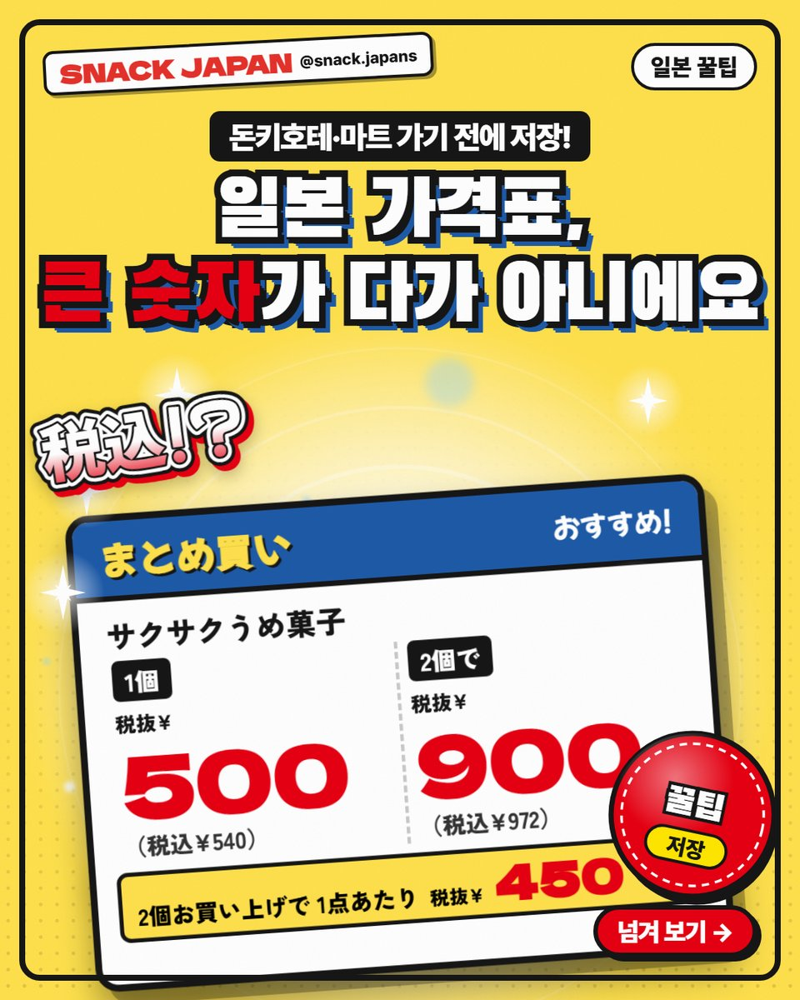
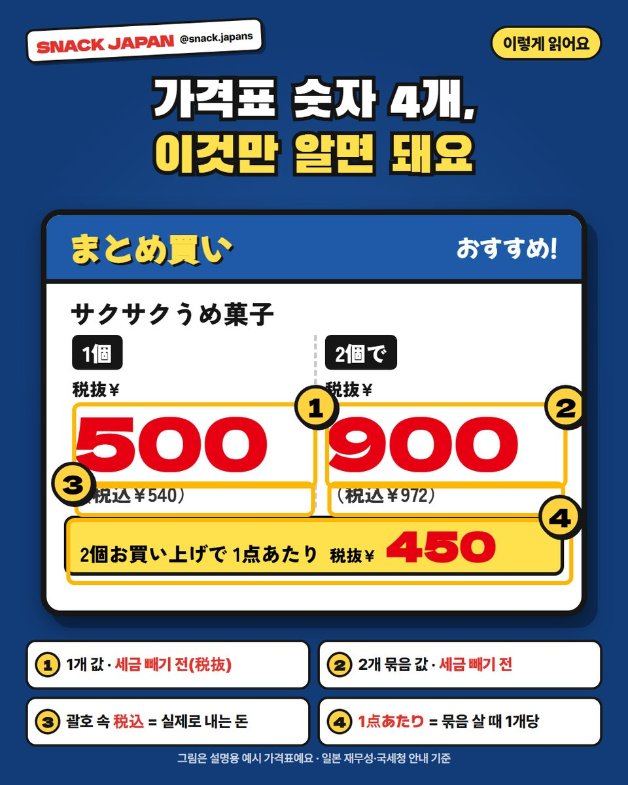
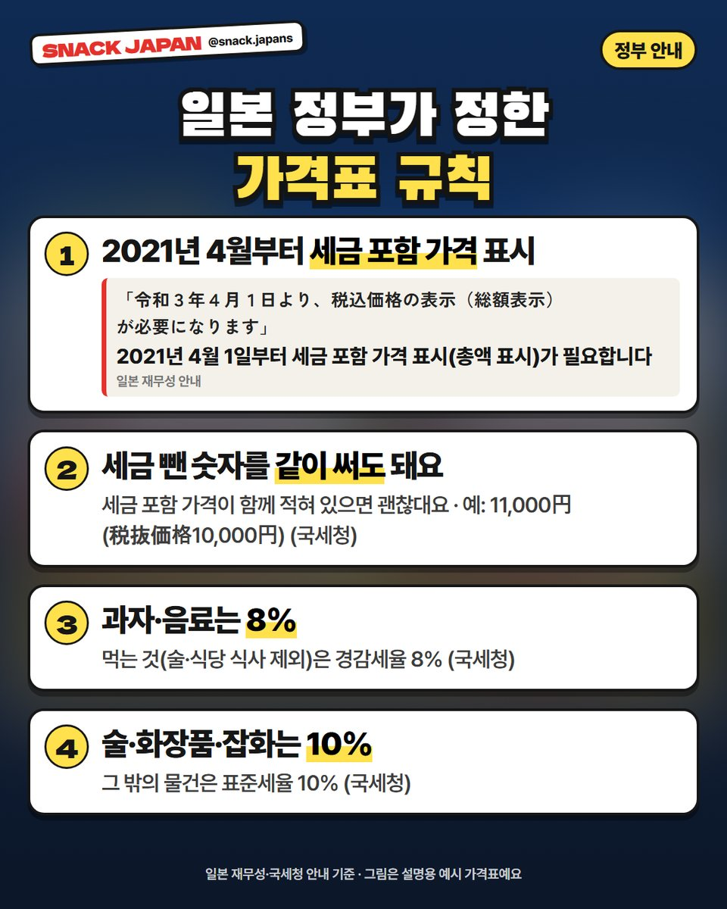
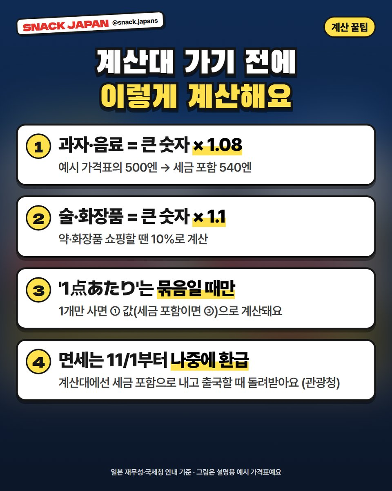

일본 가격표 읽는 법, 税抜·税込 차이 모르면 계산대에서 놀라요
큰 숫자는 세금 빼기 전! 돈키호테·마트 가격표에서 진짜 내는 돈 찾는 법과 과자 8%·잡화 10% 계산법.
일본 돈키호테나 마트에서
가격표 보고 집었는데
계산대에서 금액이 더 나온 적 있지 않아요? 😳
일본 가격표는 큰 숫자가 '세금 빼기 전' 가격인 경우가 많아요.
일본 정부 안내 기준으로, 가격표 읽는 법을 정리해 볼게요!

1. 가격표 숫자 4개, 이렇게 읽어요
설명용으로 직접 그린 예시 가격표예요. (실제 가게 가격표가 아니에요)
- ① 1개 값: 세금 빼기 전(税抜, 제이누키) 숫자
- ② 2개 묶음 값: 이것도 세금 빼기 전
- ③ 괄호 속 税込(제이코미): 세금 포함, 계산대에서 실제로 내는 돈
- ④ 1点あたり: 묶음으로 살 때만 1개당 값

2. 일본 정부가 정한 가격표 규칙
일본은 2021년 4월 1일부터
가게가 '세금 포함 가격'을 꼭 보여 줘야 해요. (일본 재무성 안내)
- 세금 포함 가격이 같이 적혀 있으면, 세금 뺀 숫자를 같이 써도 괜찮대요 (국세청)
- 그래서 큰 숫자는 세금 빼기 전, 작은 괄호는 세금 포함인 가격표가 많아요

3. 과자는 8%, 잡화는 10%
- 과자·음료 같은 먹는 것: 경감세율 8% (술·식당 식사는 제외)
- 술·화장품·잡화: 표준세율 10%
- 그래서 과자는 큰 숫자 × 1.08, 화장품은 × 1.1 하면 대충 맞아요

4. 면세는 11월부터 '나중에 환급'
11월 1일에 산 물건부터는
면세점에서도 세금 포함 가격으로 계산하고,
출국할 때 공항에서 확인받은 뒤 돌려받아요. (관광청)
총평
- 추천: 돈키호테·드러그스토어·마트에서 과자 잔뜩 살 분
- 기준: 일본 재무성·국세청·관광청 안내 (2026.10.22 확인)
가격표 앞에서 헷갈리면
괄호 속 税込부터 찾아보세요!